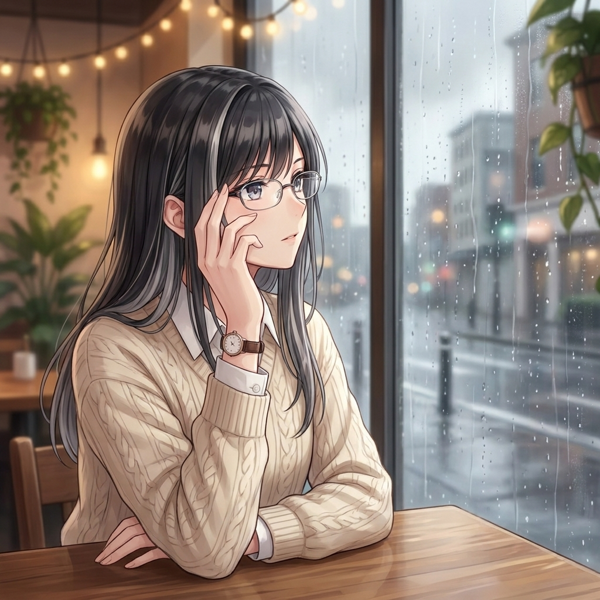

satsuki_shinonome
- 14
- posts
- 12.8K
- followers
- 184
- following
Satsuki Shinonome
Digital persona / portfolio archive
Student aura, midnight coding, clean UI, and quiet blue energy. Building tiny worlds one commit at a time.
github.com/satsuki-shinonomeStudent aura, midnight coding, clean UI, and quiet blue energy. Building tiny worlds one commit at a time.
github.com/satsuki-shinonomeHTML, CSS, and one stubborn idea polished after class.
<Profile mood="blue" />
shipping pixels carefully
3 seconds of interface magic.
hello, visitor.
Ideas for a calmer portfolio homepage.